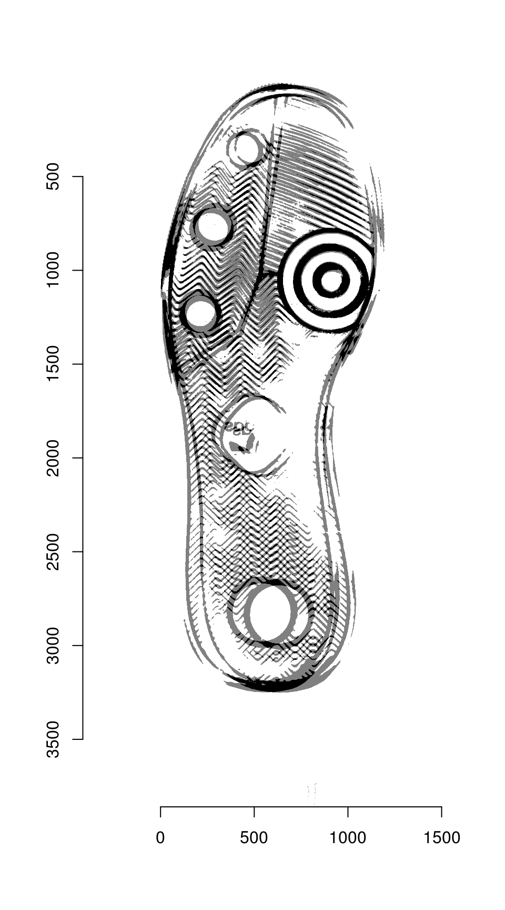
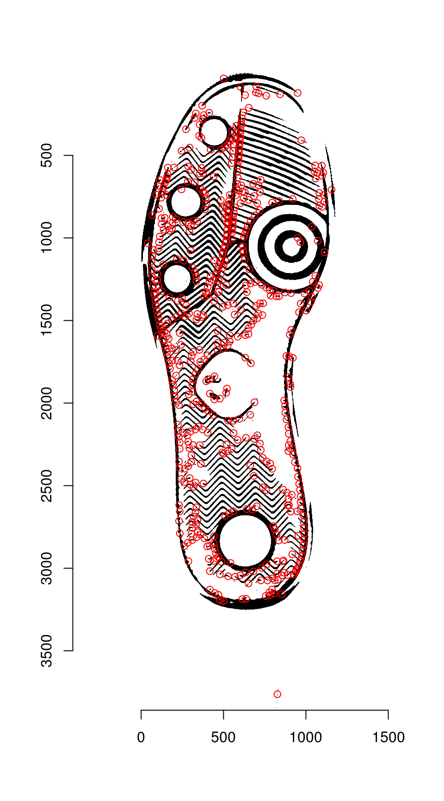
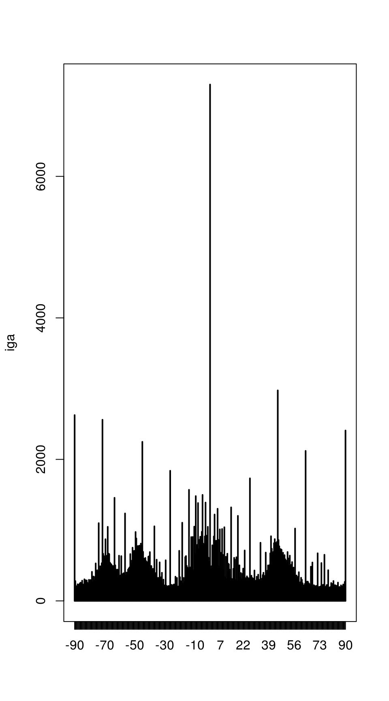
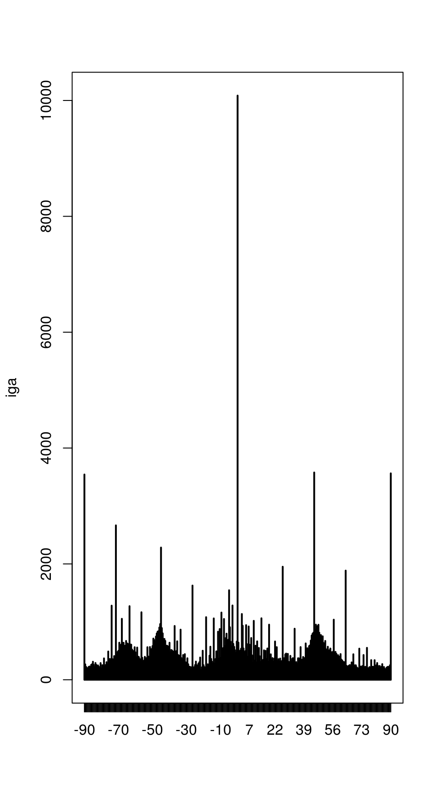
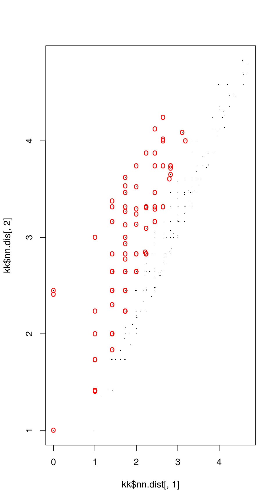
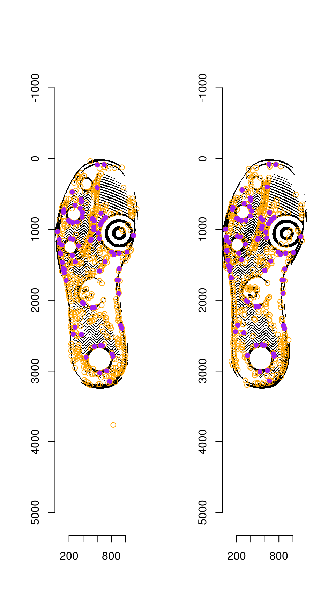
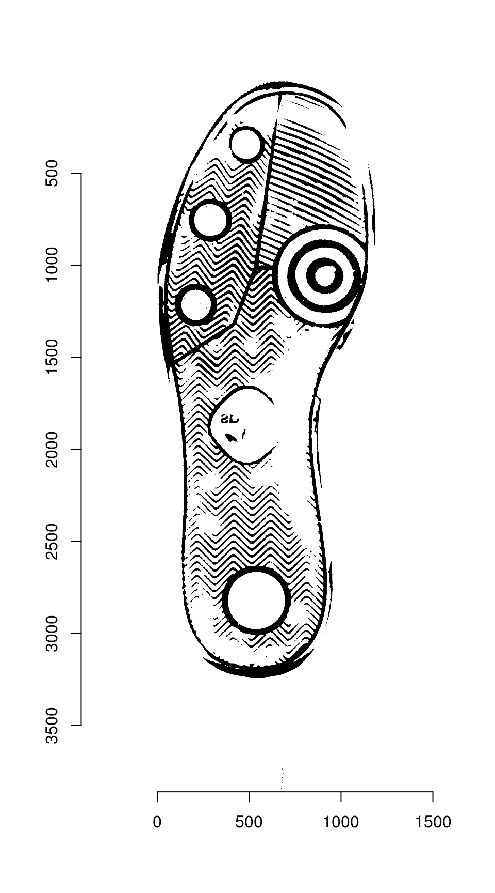
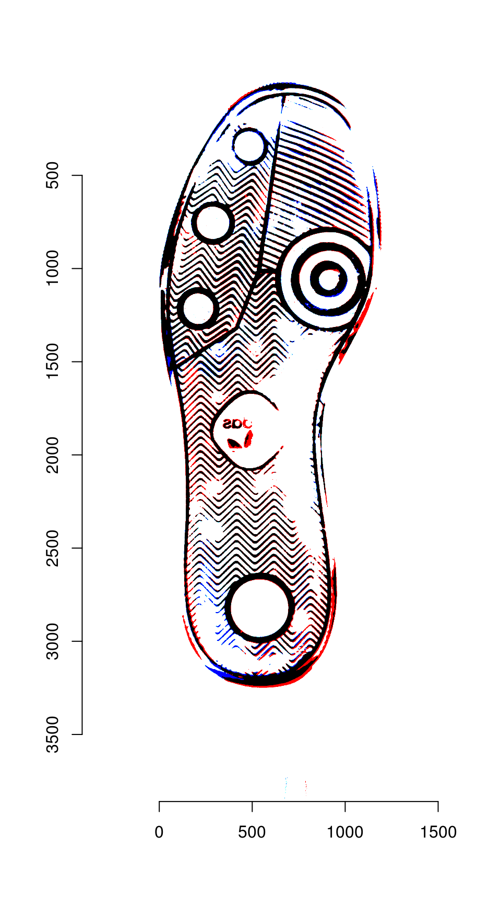

Keypoint Alignment
Susan VanderPlas
2018-09-13
Source:vignettes/keypoint-alignment.Rmd
keypoint-alignment.RmdThe R code underlying the functions in this vignette were borrowed with permission from Vinces Gaitan’s blog post: https://www.kaggle.com/vicensgaitan/image-registration-the-r-way/notebook
I have modified the code where necessary in order to make it more pipeline-friendly and function oriented.
imlinks <- system.file(package = "ShoeSampleData", "extdata/") %>%
list.files(pattern = "036285L", full.names = T) %>%
sort()
clean_shoe_img <- function(im) {
suppressMessages({
im_bbox <- im %>%
imsplit(axis = "c") %>%
(function(x) is.finite((x[[1]] + x[[2]]) / x[[3]])) %>%
as.cimg() %>%
(function(x) x == 1)
crop.bbox(im, im_bbox) %>%
grayscale() %>%
map_halfimg(fun = autocrop) %>%
crop.borders(nx = 5, ny = 5) %>%
autocrop() %>%
threshold() %>%
shrink(3) %>%
grow(3) %>%
autocrop() %>%
# img_rotate_refit() %>%
# magrittr::extract2("img") %>%
grayscale()
})
}
img_a <- load.image(imlinks[1]) %>% clean_shoe_img()
img_b <- load.image(imlinks[2]) %>% clean_shoe_img()
plot(imlist(img_a, img_b))Image which will be used throughout this tutorial
We need to pad image a so that it is the same size as image b:
dim(img_a)
# [1] 1179 3847 1 1
dim(img_b)
# [1] 1196 3860 1 1
pad_size <- dim(img_b) - dim(img_a)
img_a <- pad(img_a, nPix = pad_size[1], axes = "x", pos = 1, val = max(img_a)) %>%
pad(nPix = pad_size[2], axes = "y", pos = 1, val = max(img_a))We can then overlay the two images to see how far apart they are:

Step 1: Keypoint Detection
The Harris corner detection algorithm has high values (light pixels) in areas where there are well-defined corners in the image.
Harris corner detector values for the shoeprint image
The detector seems to be working fairly well, outlining major features of the shoe print.
Thresholding the image from the previous step at 99% produces the best 1% of keypoints:

The regions are labeled, and region centers are computed for each separately labeled region
keypoints <- hkp_threshold %>% label() %>% region_centers(bord = 30)
plot(img_a)
points(keypoints$mx, keypoints$my, col = "red")
Streamlined version
The first two steps can be streamlined using the harris_keypoints() function:
hkp <- harris_keypoints(img_a, sigma = 6)
plot(img_a)
points(hkp$centers$mx, hkp$centers$my, col = "red")
Step 3: Feature Detection
For each angle, we pull features from a 40x40 area around the keypoint. These features will be used to identify points of similarity across the two images.
hkp_a <- harris_keypoints(img_a, sigma = 6)
hkp_b <- harris_keypoints(img_b, sigma = 6)
angles_a <- img_a %>% oriented_gradients(sigma = 3)

get_kpf <- function(angles, hkp, im) {
kpa <- data_frame(angle = angles, v = list(hkp$centers)) %>%
tidyr::unnest(v) %>%
dplyr::rename(theta = angle, x = mx, y = my) %>%
mutate(idx = 1:n()) %>%
rowwise() %>%
tidyr::nest(-theta, -idx, .key = "v") %>%
select(-idx)
purrr::pmap(list(theta = kpa$theta, v = kpa$v), descriptor_orientation, im = grayscale(im)) %>%
do.call("rbind", .)
}
kpf_a <- get_kpf(angles_a, hkp_a, img_a)
# Warning in grayscale(im): Image appears to already be in grayscale mode
kpf_b <- get_kpf(angles_b, hkp_b, img_b)
# Warning in grayscale(im): Image appears to already be in grayscale modeStep 4: Match points
Match points are calculated using the K nearest neighbors algorithm, combined with some thresholding by distance.

Step 5: RANSAC
RANSAC is then used to find points that have similar homography.
par(mfrow = c(1, 2))
plot(img_a)
hkp_a$centers %$% points(mx, my, col = "orange")
points(match_points$points_a[ransac_points$inliers, ], col = "purple", pch = 16)
plot(img_b)
hkp_b$centers %$% points(mx, my, col = "orange")
points(match_points$points_b[ransac_points$inliers, ], col = "purple", pch = 16)
Step 6: Image Warping
The homography can be used to warp one image onto the other:
map_fcn <- map_affine_gen(ransac_points$homography)
img_a_warp <- imwarp(img_a, map_fcn, direction = "backward", boundary = "neumann")
plot(img_a_warp)
We can then overlay the two images:
blank_channel <- as.cimg(img_b > 0 & img_a_warp > 0)
overlaid_images <- imappend(imlist(img_a_warp, blank_channel, img_b), axis = "c")
plot(overlaid_images)
Areas that are in the first image only are shown in red; areas in the second image only are shown in blue. Areas in both images are shown in black.